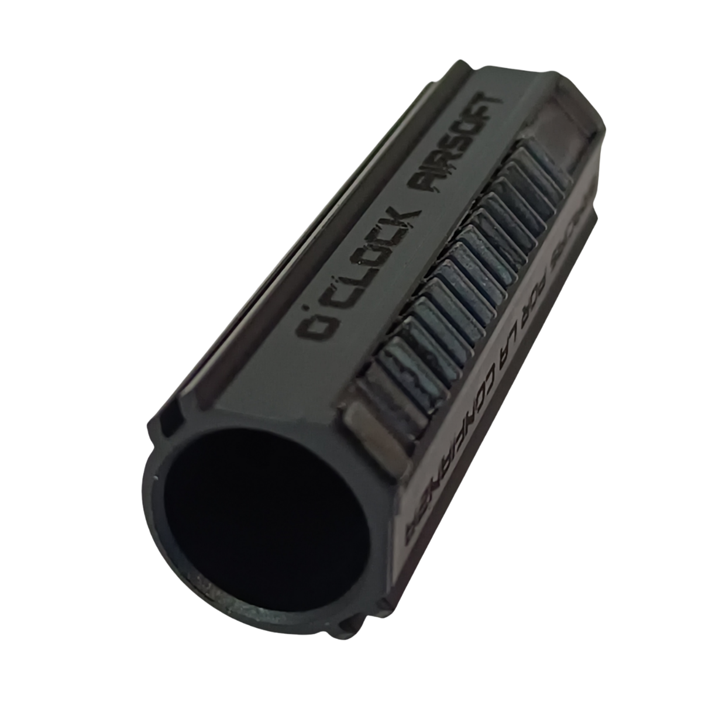
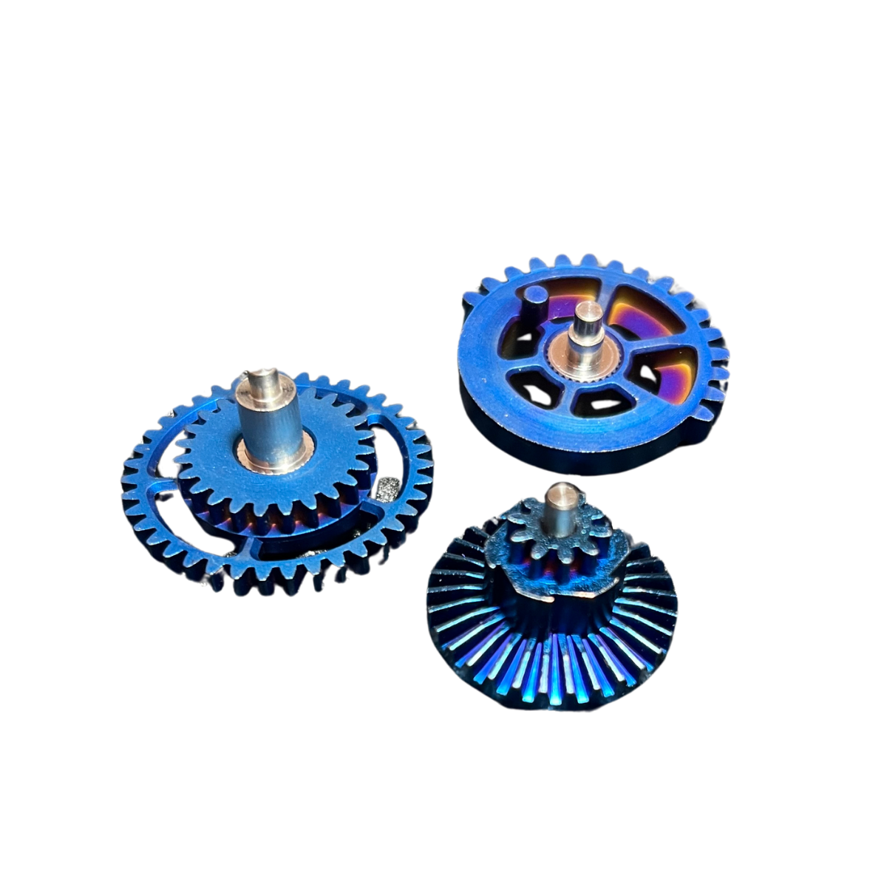
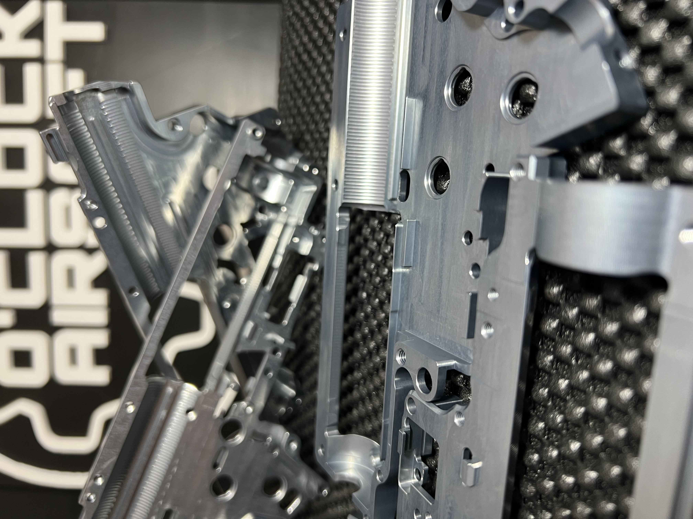

Mejor agrupación
Una configuración más estable ayuda a reducir variaciones innecesarias entre disparos.
Disparos más agrupados.O'Clock Airsoft · Precisión controlada
Precisión y control para un disparo más limpio.
Una preparación pensada para mejorar la estabilidad, la agrupación y el comportamiento del disparo sin convertir la réplica en una configuración extrema.
El problema
La precisión no depende solo del jugador. También influyen el sellado, la estabilidad del ciclo, la alimentación, el hop-up, el cañón, las tolerancias internas y el ajuste general de la réplica.
La agrupación empieza dentro.
Precisión como sistema
El Pack Tirador trabaja sobre los puntos que afectan a la repetibilidad del disparo: sellado, alimentación, estabilidad del conjunto neumático y ajuste fino de los componentes.

Lo que notas en el disparo
Una configuración más estable ayuda a reducir variaciones innecesarias entre disparos.
Disparos más agrupados.El ajuste del conjunto favorece un comportamiento más constante de la bola.
Más control tiro a tiro.Un buen ajuste entre nozzle, cámara y conjunto neumático ayuda a reducir pérdidas de aire.
Menos variación energética.Cuando el ciclo mecánico trabaja con menos fricción y mejor ajuste, la réplica transmite una sensación más suave y controlada.
Sensación más precisa.No se trata solo de cambiar piezas, sino de comprobar compatibilidad, tolerancias y funcionamiento real.
Más criterio, menos azar.Componentes y ajustes de precisión
La configuración se adapta a la réplica base y al objetivo del jugador, seleccionando piezas y ajustes que aporten estabilidad, sellado y repetibilidad.

Cilindro de una sola pieza diseñado para mejorar la estabilidad del conjunto neumático y favorecer una entrega de aire más coherente.
Mayor estabilidad neumática.
Cabeza de pistón diseñada para mejorar la eficiencia del conjunto neumático, favorecer un sellado más estable y aportar una entrega de energía más consistente.
Eficiencia y estabilidad en cada disparo.Pieza clave dentro del conjunto neumático. Su ajuste correcto ayuda a mejorar el sellado interno, estabilizar la salida de aire y trabajar en conjunto con el nozzle y la cabeza de pistón.
Mejor sellado y transferencia de aire más estable.
Selección entre SHS, RetroArms o FPS según la configuración. Puede recibir mecanizado y termofundido mediante inducción para mejorar resistencia y compatibilidad.
Vida útil extendida y compatibilidad garantizada.
Selección entre SHS, Saigo CNC, Pandora o Titanium Series aligerados, según el objetivo de suavidad, fiabilidad y configuración interna de cada réplica.
Transmisión eficiente y ciclo más estable.
El conjunto de cañón influye directamente en la estabilidad del disparo, la agrupación y el comportamiento tiro a tiro.
Mejor comportamiento y agrupación más estable.
Cada montaje se revisa con criterio técnico, comprobando compatibilidad, sellado, alimentación y comportamiento real antes de darlo por terminado.
Precisión basada en ajuste real.Ajuste fino de taller
Una preparación orientada a precisión necesita revisar tolerancias, compatibilidad y comportamiento real. No basta con montar piezas de catálogo: hay que comprobar cómo trabaja el conjunto.
Filosofía del pack
El Pack Tirador está pensado para jugadores que quieren mejorar el comportamiento del disparo, la agrupación y la estabilidad sin pasar a una configuración extrema de largo alcance.
No se trata de disparar más fuerte. Se trata de disparar mejor.
Compatibilidad y uso recomendado
Usuarios que quieren una réplica más precisa, estable y limpia en el disparo.
Fusilero preciso, tirador de apoyo ligero y configuraciones orientadas a agrupación.
Plataformas AEG compatibles, revisando base, cámara, cañón, gearbox y configuración interna.
Recomendable instalación técnica para asegurar compatibilidad, ajuste y funcionamiento correcto.
La configuración final puede variar según la réplica base, el uso previsto y el objetivo de precisión.
Ficha práctica
Jugadores que buscan mejorar precisión, agrupación y estabilidad sin irse a una configuración DMR.
Sellado, cámara, cañón, alimentación, compresión y compatibilidad interna.
Componentes seleccionados según la base de la réplica y el objetivo de precisión.
No es una simple subida de potencia ni garantiza resultados sin una base compatible.
Recomendable por taller especializado.
Consulta compatibilidad para evitar montar piezas que no trabajen bien juntas.
Comparativa con otros packs
Cada pack responde a una forma distinta de jugar.
Consulta técnica
Cuéntanos qué réplica tienes, qué uso le das y qué comportamiento buscas. Revisaremos tu caso antes de recomendar una configuración.
O'Clock Airsoft
Cuéntanos tu réplica y el comportamiento que buscas. Te ayudamos a plantear una preparación con criterio.